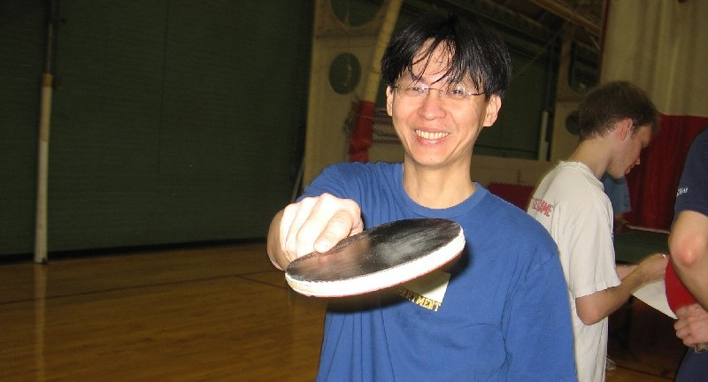

|
 |
|
|  |
|
Am I allowed to join the MIT Table Tennis Club?
We welcome any MIT students, faculty, staff, alumni, affiliates, and their families of all skill levels. You will need an MIT athletics card or an equivalent in order to access our practice facilities. For card information, you can visit the MIT Department of Recreation.
If you do not fall in one of the above categories, then unfortunately you will not be allowed to join the club. This is due to the rules set by the MIT Club Sports Council.
What do I have to do to join the MIT Table Tennis Club?
It’s simple, download and sign the waiver form (http://web.mit.edu/clubsports/officers/waivers.shtml) and submit it to a coach during the next practice.
Are there any membership fees associated with joining the club?
No.
What equipment do you provide for club members?
We have 14 Butterfly Europa tables with nets. We also provide practice balls and paddles if you do not have your own.
What equipment should I bring to the club?
If you have your own paddle, please bring it. Also, please wear appropriate shoes and sports attire.
Can you tell me about coaching at the MIT Table Tennis Club?
Our primary coach, Coach Liang Liung, is a USATT certified coach who has experience instructing players of all skill levels. Team coach Carlos Espinoza-Toro specializes in training the MIT team for intercollegiate competition. They are assisted by Coach Alex Landsman. During club hours, you may approach any of the coaches and ask to practice with them (the cost is covered by the club). If there are other members waiting, please limit your time with a coach. For individual coaching outside of club hours, please talk to Coach Liang. For further information regarding coaching please email tabletennisclub@mit.edu
What happens if there are not enough tables to accommodate all players?
Please be aware of other players while you are at the club. Consider stepping down from your table after you have played for a while if there are others waiting. If you are waiting, you can ask people playing on a table if you can play the winner, or if you are with a friend, you can ask if you can use the table afterwards.

I would like to buy my own paddle. What should I do?
There are many good table tennis companies that sell good products for players of all skill levels. You can browse several of these company websites (Butterfly, Stiga, Killerspin, etc.) or table tennis retailer sites (Paddle Palace, Table Tennis Pioneers, etc.) to find something suitable for yourself. If you have questions, you can ask one of our coaches. As a certified coach, Coach Liung can buy table tennis gear at discounted prices, which you have access to if you wish to purchase a paddle through him.
What is the MIT Table Tennis Team?
The MIT Table Tennis Team is an intercollegiate team made up of undergraduate and graduate students who compete with teams from other colleges in intercollegiate divisional play. We are part of the New England Division which includes universities such as Brown, BU, Harvard, Northeastern, etc. The team is made up of 8 players to maintain a healthy roster. The teams competes 4 times per year (twice in the fall and twice in the spring), and based on how well the teams do in Divisional play, they go forward to Nationals. . More information can be found at the NCTTA site
How do I join the Table Tennis Team?
If you would like to join the MIT Table Tennis Team, please contact us as early as possible. See the Join Us Section for more details
Who should I contact if I want to help with running the club / running tournaments / etc.?
Please contact the club officers at tt-officers@mit.edu. You are more than welcome to help us out. No experience necessary - if training is involved, we will train you. If you have any questions, please feel free to ask.
MIT Table Tennis Club. Maintained by Jessie T Zhang